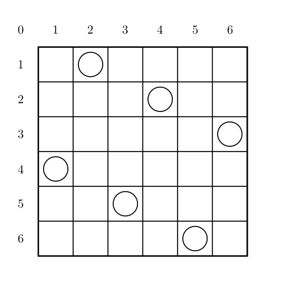

13 、DFS
1、常见思路
Note
本质：递归
2、剪枝
- 可行性剪枝
例题
e.g.35 迷宫
题目描述
给定一个 \(N \times M\) 方格的迷宫，迷宫里有 \(T\) 处障碍，障碍处不可通过。
在迷宫中移动有上下左右四种方式，每次只能移动一个方格。数据保证起点上没有障碍。
给定起点坐标和终点坐标，每个方格最多经过一次，问有多少种从起点坐标到终点坐标的方案。
输入格式
第一行为三个正整数 \(N,M,T\)，分别表示迷宫的长宽和障碍总数。
第二行为四个正整数 \(SX,SY,FX,FY\)，\(SX,SY\) 代表起点坐标，\(FX,FY\) 代表终点坐标。
接下来 \(T\) 行，每行两个正整数，表示障碍点的坐标。
输出格式
输出从起点坐标到终点坐标的方案总数。
样例
样例输入
样例输出
提示
对于 \(100\%\) 的数据，\(1 \le N,M \le 5\)，\(1 \le T \le 10\)，\(1 \le SX,FX \le n\)，\(1 \le SY,FY \le m\)。
#include <bits/stdc++.h>
using namespace std;
int n, m, t, ans, g[10][10];
int dir[4][2] = {{0, 1},
{1, 0},
{-1, 0},
{0, -1}}; // 方向数组，表示上下左右四个方向
int SX, SY, EX, EY;
bool vis[10][10];
void dfs(int x, int y) {
if (x == EX && y == EY) {
ans++;
return;
}
for (int i = 0; i < 4; i++) {
int nx = x + dir[i][0];
int ny = y + dir[i][1];
if (nx < 1 || nx > n ||
ny < 1 || ny > m ||
g[nx][ny] == 1 ||
vis[nx][ny] == 1)
continue;
vis[nx][ny] = 1; // 标记该点已访问
dfs(nx, ny); // 递归调用深度优先搜索函数
vis[nx][ny] = 0; // 回溯，取消标记
}
}
int main() {
cin >> n >> m >> t;
cin >> SX >> SY >> EX >> EY;
for (int i = 1; i <= t; i++) {
int x, y;
cin >> x >> y;
g[x][y] = 1;
}
vis[SX][SY] = 1;
dfs(SX, SY); // 调用深度优先搜索函数
cout << ans << endl;
}
e.g.36 全排列问题
题目描述
按照字典序输出自然数 \(1\) 到 \(n\) 所有不重复的排列，即 \(n\) 的全排列，要求所产生的任一数字序列中不允许出现重复的数字。
输入格式
一个整数 \(n\)。
输出格式
由 \(1 \sim n\) 组成的所有不重复的数字序列，每行一个序列。
每个数字保留 \(5\) 个场宽。
样例
样例输入
样例输出
提示
\(1 \leq n \leq 9\)。
#include <bits/stdc++.h>
using namespace std;
int n, cnt, num[10];
bool vis[10];
void dfs(int k) {
if (k == n) {
for (int i = 1; i <= n; i++) {
cout << " " << num[i];
}
cout << endl;
return;
}
for (int i = 1; i <= n; i++) {
if (vis[i] == 0) {
vis[i] = 1;
num[++cnt] = i;
dfs(k + 1);
vis[i] = 0;
cnt--;
}
}
}
int main() {
cin >> n;
dfs(0);
return 0;
}
e.g.37 最大连通
问题描述
小蓝有一个 30 行 60 列的数字矩阵，矩阵中的每个数都是 0 或 1 。
样例输入
110010000011111110101001001001101010111011011011101001111110
010000000001010001101100000010010110001111100010101100011110
001011101000100011111111111010000010010101010111001000010100
101100001101011101101011011001000110111111010000000110110000
010101100100010000111000100111100110001110111101010011001011
010011011010011110111101111001001001010111110001101000100011
101001011000110100001101011000000110110110100100110111101011
101111000000101000111001100010110000100110001001000101011001
001110111010001011110000001111100001010101001110011010101110
001010101000110001011111001010111111100110000011011111101010
011111100011001110100101001011110011000101011000100111001011
011010001101011110011011111010111110010100101000110111010110
001110000111100100101110001011101010001100010111110111011011
111100001000001100010110101100111001001111100100110000001101
001110010000000111011110000011000010101000111000000110101101
100100011101011111001101001010011111110010111101000010000111
110010100110101100001101111101010011000110101100000110001010
110101101100001110000100010001001010100010110100100001000011
100100000100001101010101001101000101101000000101111110001010
101101011010101000111110110000110100000010011111111100110010
101111000100000100011000010001011111001010010001010110001010
001010001110101010000100010011101001010101101101010111100101
001111110000101100010111111100000100101010000001011101100001
101011110010000010010110000100001010011111100011011000110010
011110010100011101100101111101000001011100001011010001110011
000101000101000010010010110111000010101111001101100110011100
100011100110011111000110011001111100001110110111001001000111
111011000110001000110111011001011110010010010110101000011111
011110011110110110011011001011010000100100101010110000010011
010011110011100101010101111010001001001111101111101110011101
如果从一个标为 1 的位置可以通过上下左右走到另一个标为 1 的位置，则称两个位置连通。与某一个标为 1 的位置连通的所有位置（包括自己）组成一个连通分块。
请问矩阵中最大的连通分块有多大？
#include <bits/stdc++.h>
using namespace std;
int n = 30, m = 60, ans, t;
char g[100][100];
bool vis[100][100];
int dir[4][2] = {{0, 1}, {1, 0}, {-1, 0}, {0, -1}};
void dfs(int x, int y) {
t++;
for (int i = 0; i < 4; i++) {
int nx = x + dir[i][0];
int ny = y + dir[i][1];
if (nx < 1 || nx > n ||
ny < 1 || ny > m ||
g[nx][ny] == '0' ||
vis[nx][ny] == 1) {
continue;
}
vis[nx][ny] = 1;
dfs(nx, ny);
}
}
int main() {
for (int i = 1; i <= n; i++) {
scanf("%s", g[i] + 1);
}
for (int i = 1; i <= n; i++) {
for (int j = 1; j <= m; j++) {
if (g[i][j] == '1' && vis[i][j] == 0) {
t = 0;
vis[i][j] = 1;
dfs(i, j);
ans = max(ans, t);
}
}
}
cout << ans;
}
e.g.38 [USACO1.5] 八皇后 Checker Challenge
题目描述
一个如下的 \(6 \times 6\) 的跳棋棋盘，有六个棋子被放置在棋盘上，使得每行、每列有且只有一个，每条对角线（包括两条主对角线的所有平行线）上至多有一个棋子。

上面的布局可以用序列 \(2\ 4\ 6\ 1\ 3\ 5\) 来描述，第 \(i\) 个数字表示在第 \(i\) 行的相应位置有一个棋子，如下：
行号 \(1\ 2\ 3\ 4\ 5\ 6\)
列号 \(2\ 4\ 6\ 1\ 3\ 5\)
这只是棋子放置的一个解。请编一个程序找出所有棋子放置的解。
并把它们以上面的序列方法输出，解按字典顺序排列。
请输出前 \(3\) 个解。最后一行是解的总个数。
输入格式
一行一个正整数 \(n\)，表示棋盘是 \(n \times n\) 大小的。
输出格式
前三行为前三个解，每个解的两个数字之间用一个空格隔开。第四行只有一个数字，表示解的总数。
样例
样例输入
样例输出
提示
【数据范围】
对于 \(100\%\) 的数据，\(6 \le n \le 13\)。
#include <bits/stdc++.h>
using namespace std;
int n, ans, flag = 3, g[20][20];
bool check(int x, int y) {
for (int i = 1; i < x; i++)
if (g[i][y])
return false;
int num = 1;
for (int i = x - 1; i >= 1; i--) {
if (y - num >= 1 && g[i][y - num])
return false;
if (y + num <= n && g[i][y + num])
return false;
num++;
}
return true;
}
void dfs(int k) {
if (k == n + 1) {
ans++;
if (flag >= 1) {
flag--;
for (int i = 1; i <= n; i++)
for (int j = 1; j <= n; j++) {
if (g[i][j])
cout << j << " ";
}
cout << endl;
}
return;
}
for (int i = 1; i <= n; i++) {
g[k][i] = 1;
if (check(k, i))
dfs(k + 1);
g[k][i] = 0;
}
}
int main() {
cin >> n;
dfs(1);
cout << ans << endl;
return 0;
}
e.g.39 小猫爬山
题目描述
Freda 和 rainbow 饲养了 \(N(N\le 18)\) 只小猫，这天，小猫们要去爬山。经历了千辛万苦，小猫们终于爬上了山顶，但是疲倦的它们再也不想徒步走下山了
Freda 和 rainbow 只好花钱让它们坐索道下山。索道上的缆车最大承重量为 \(W\)，而 \(N\) 只小猫的重量分别是 \(C_1,C2,\dots C_N\)。当然，每辆缆车上的小猫的重量之和不能超过 \(W(1\le C_i,W \le 10^8)\)。每租用一辆缆车，Freda 和 rainbow 就要付 \(1\) 美元，所以他们想知道，最少需要付多少美元才能把这 \(N\) 只小猫都运送下山？
输入格式
第一行包含两个用空格隔开的整数，\(N\) 和 \(W\)。 接下来 \(N\) 行每行一个整数，其中第 \(i+1\) 行的整数表示第 \(i\) 只小猫的重量 \(C_i\)。
输出格式
输出一个整数，最少需要多少美元，也就是最少需要多少辆缆车。
样例
样例输入
样例输出